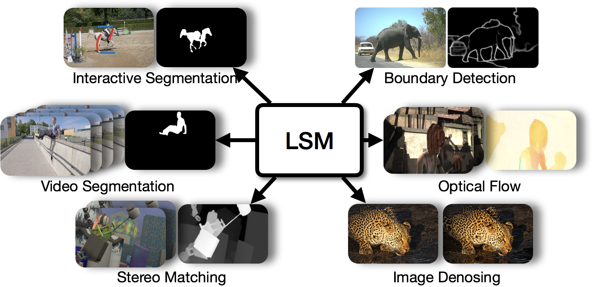

About me
I am currentlyContact
chengzhou_tang@sfu.ca or chengzhout@gmail.com
Publications
 |
LSM: Learning Subspace Minmization for Low-level Vision
IEEE Conference on Computer Vision and Pattern Recognition (CVPR), Oral Presentation (5% acceptance rate), 2020
|
Services
- Review for International Journal of Computer Vision (IJCV)